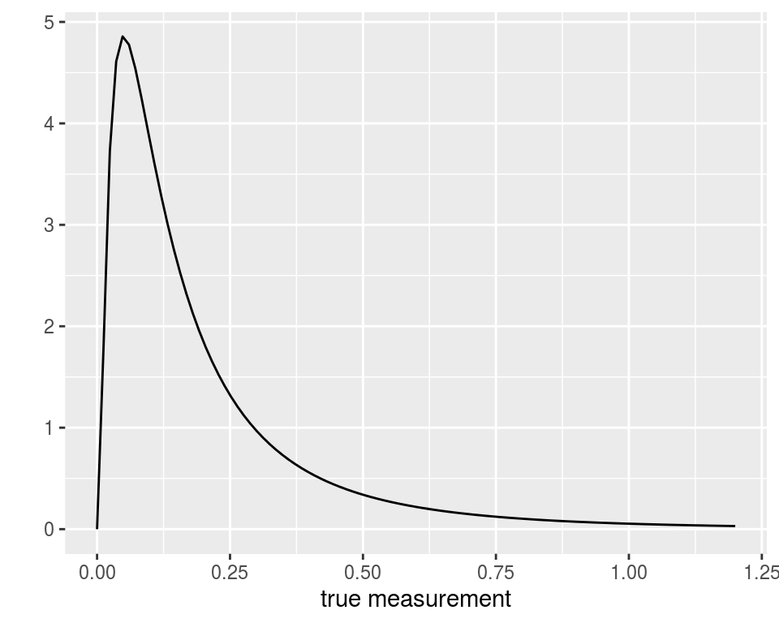
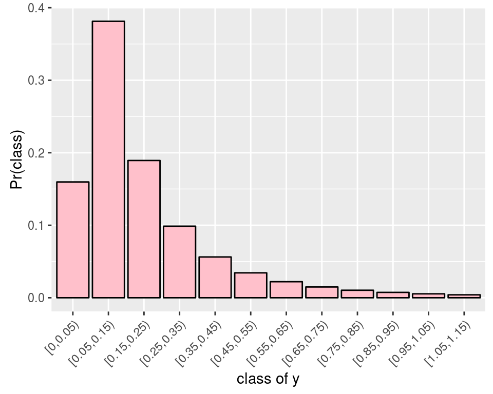
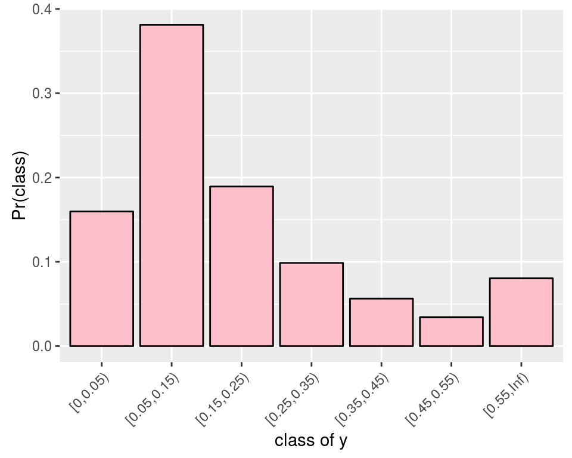

-
Dealing with rounded data
2016-03-24
SourceReal “continuous” data are always rounded. For instance, I already had to deal with these data:
head(dat, 15) ## factor1 factor2 y ## 1 A1 B1 0.1 ## 2 A1 B1 0.1 ## 3 A1 B1 0.1 ## 4 A1 B1 0.1 ## 5 A1 B1 0.1 ## 6 A1 B1 0.1 ## 7 A1 B1 0.3 ## 8 A1 B1 0.3 ## 9 A1 B1 0.1 ## 10 A1 B2 0.2 ## 11 A1 B2 0.1 ## 12 A1 B2 0.1 ## 13 A1 B2 0.1 ## 14 A1 B2 0.0 ## 15 A1 B2 0.0These data were recorded by a measurement device with one decimal precision. Thus, a value of \(0.1\) actually means the value lies between \(0.05\) and \(0.15\). A value of \(0\) actually means the value lies beteen \(0\) and \(0.05\) (these are nonnegative measurements).
In fact these are intervals data:
dat1 <- transform(dat, low = pmax(0,y-0.05), up = y+0.05) head(dat1, 15) ## factor1 factor2 y low up ## 1 A1 B1 0.1 0.05 0.15 ## 2 A1 B1 0.1 0.05 0.15 ## 3 A1 B1 0.1 0.05 0.15 ## 4 A1 B1 0.1 0.05 0.15 ## 5 A1 B1 0.1 0.05 0.15 ## 6 A1 B1 0.1 0.05 0.15 ## 7 A1 B1 0.3 0.25 0.35 ## 8 A1 B1 0.3 0.25 0.35 ## 9 A1 B1 0.1 0.05 0.15 ## 10 A1 B2 0.2 0.15 0.25 ## 11 A1 B2 0.1 0.05 0.15 ## 12 A1 B2 0.1 0.05 0.15 ## 13 A1 B2 0.1 0.05 0.15 ## 14 A1 B2 0.0 0.00 0.05 ## 15 A1 B2 0.0 0.00 0.05Thus, assuming for instance that the true values of the measurements follow a log-normal distribution:

then one should use a rounded log-normal distribution to model the data:

By the way, one would get a problem if one intended to fit a log-normal distribution to the
yvalues, because there are some zero values.Using the
groupedpackageOne way to deal with this issue is to use the
groupedR package. It allows to fit linear regression models to grouped data. It is very easy to use:library(grouped) fit <- grouped(cbind(low, up) ~ factor1*factor2, link="log", data=dat1) summary(fit) ## ## Call: ## grouped(formula = cbind(low, up) ~ factor1 * factor2, link = "log", data = dat1) ## ## Model Summary: ## log.Lik AIC BIC ## -44.711 99.421 107.739 ## ## Coefficients: ## Esimate Std.error t.value p.value ## (Intercept) -2.111 0.217 -9.73 <0.001 ## factor1A2 0.551 0.289 1.90 0.065 ## factor2B2 -0.574 0.301 -1.90 0.065 ## factor1A2:factor2B2 -0.551 0.414 -1.33 0.193 ## ## Random-Effect: ## value std.error link.distribution ## sigma 0.579 0.0821 log-normal ## ## Optimization: ## Convergence: 0 ## max(|grad|): 0.00015 ## Outer iter: 1The
groupedpackage provides confidence intervals “\(\textrm{estimate}\pm z_{1-\frac{\alpha}{2}}\textrm{stderr}\)”:confint(fit) ## 2.5 % 97.5 % ## (Intercept) -2.53560037 -1.6854123 ## factor1A2 -0.01637233 1.1174238 ## factor2B2 -1.16437699 0.0168808 ## factor1A2:factor2B2 -1.36285840 0.2617881This method to get confidence intervals is an asymptotic one, and they are possibly too short for small sample sizes.
A Bayesian solution using STAN
With STAN, one can assign a rounded log-normal distribution to the observations with the help of the
categoricaldistribution.We use the
cutfunction to create the classes of the measurements:cuts <- c(0, seq(0.05, max(dat$y)+0.1, by=0.1), Inf) dat2 <- transform(dat, class=cut(y, cuts, right=FALSE)) summary(dat2) ## factor1 factor2 y class ## A1:19 B1:19 Min. :0.0000 [0,0.05) : 6 ## A2:20 B2:20 1st Qu.:0.1000 [0.05,0.15):23 ## Median :0.1000 [0.15,0.25): 3 ## Mean :0.1385 [0.25,0.35): 4 ## 3rd Qu.:0.1500 [0.35,0.45): 2 ## Max. :0.5000 [0.45,0.55): 1 ## [0.55,Inf) : 0There is no value beyond \(0.55\), hence we will fit such a categorical distribution:
 where the probabilities of the classes are given by the cdf of the log-normal distribution: \[ \Pr\bigl([a,b)\bigr) = \Phi\left(\frac{\log(b)-\mu}{\sigma}\right) - \Phi\left(\frac{\log(a)-\mu}{\sigma} \right). \]
The support of the
categoricaldistribution in STAN is \(1\), \(2\), \(\ldots\), \(K\), so we have to encode each class by an integer:dat2 <- transform(dat2, ycat=as.integer(class)) head(dat2, 15) ## factor1 factor2 y class ycat ## 1 A1 B1 0.1 [0.05,0.15) 2 ## 2 A1 B1 0.1 [0.05,0.15) 2 ## 3 A1 B1 0.1 [0.05,0.15) 2 ## 4 A1 B1 0.1 [0.05,0.15) 2 ## 5 A1 B1 0.1 [0.05,0.15) 2 ## 6 A1 B1 0.1 [0.05,0.15) 2 ## 7 A1 B1 0.3 [0.25,0.35) 4 ## 8 A1 B1 0.3 [0.25,0.35) 4 ## 9 A1 B1 0.1 [0.05,0.15) 2 ## 10 A1 B2 0.2 [0.15,0.25) 3 ## 11 A1 B2 0.1 [0.05,0.15) 2 ## 12 A1 B2 0.1 [0.05,0.15) 2 ## 13 A1 B2 0.1 [0.05,0.15) 2 ## 14 A1 B2 0.0 [0,0.05) 1 ## 15 A1 B2 0.0 [0,0.05) 1Now we write and compile the STAN model:
library(rstan) rstan_options(auto_write = TRUE) options(mc.cores = parallel::detectCores()) stancode <- " data { int<lower=1> N; // number of observations int<lower=1> ycat[N]; // observations int<lower=1> P; // number of parameters matrix[N,P] X; // model matrix int<lower=1> K; // number of categories vector[K-1] cuts; // the cuts 0.05, 0.15, ..., 0.55 } parameters { vector[P] beta; real<lower=0> sigma; } transformed parameters { vector[N] mu; simplex[K] p[N]; mu <- X*beta; for(i in 1:N){ p[i][1] <- Phi((log(cuts[1])-mu[i])/sigma); for(j in 2:(K-1)){ p[i][j] <- Phi((log(cuts[j])-mu[i])/sigma) - Phi((log(cuts[j-1])-mu[i])/sigma); } p[i][K] <- 1.0 - sum(p[i][1:(K-1)]); } } model { for(i in 1:N) ycat[i] ~ categorical(p[i]); beta ~ normal(0, 20); // prior on the regression coefficients sigma ~ cauchy(0, 5); // prior on the standard deviation } " # Compilation stanmodel <- stan_model(model_code = stancode, model_name="rounded 2-way ANOVA")And we run the STAN sampler:
# Stan data K <- length(cuts)-1 X <- model.matrix(~factor1*factor2, data=dat2) standata <- list(ycat=dat2$ycat, N=nrow(dat2), K=K, cuts=cuts[2:K], X=X, P=ncol(X)) # Run Stan samples <- sampling(stanmodel, data = standata, iter = 11000, warmup = 1000, chains = 4) # Outputs library(coda) codasamples <- do.call(mcmc.list, plyr::alply(rstan::extract(samples, permuted=FALSE, pars=c("beta", "sigma")), 2, mcmc)) summary(codasamples) ## ## Iterations = 1:10000 ## Thinning interval = 1 ## Number of chains = 4 ## Sample size per chain = 10000 ## ## 1. Empirical mean and standard deviation for each variable, ## plus standard error of the mean: ## ## Mean SD Naive SE Time-series SE ## beta[1] -2.1228 0.2411 0.0012055 0.0022252 ## beta[2] 0.5479 0.3240 0.0016199 0.0029783 ## beta[3] -0.5780 0.3369 0.0016843 0.0031244 ## beta[4] -0.5470 0.4629 0.0023146 0.0042449 ## sigma 0.6537 0.1032 0.0005162 0.0008849 ## ## 2. Quantiles for each variable: ## ## 2.5% 25% 50% 75% 97.5% ## beta[1] -2.60292 -2.2815 -2.1209 -1.9626 -1.65339 ## beta[2] -0.09319 0.3348 0.5483 0.7637 1.18396 ## beta[3] -1.24907 -0.7990 -0.5791 -0.3557 0.08303 ## beta[4] -1.46832 -0.8486 -0.5450 -0.2444 0.37006 ## sigma 0.48257 0.5813 0.6429 0.7145 0.88888The estimates of the regression parameters are almost the same as the ones provided by the
groupedpackage, and confidence intervals are a bit larger. The estimate of \(\sigma\) is a bit different.Of course, the major advantage of the Bayesian way is that it can be used for any parametric model, not only the linear regression models.
- Home
- About
- PoirotReproducible Blogging with R Markdown
- SlidifyReproducible html5 slides from R markdown
- R-bloggersBlog posts about R, contributed by R bloggers worldwide.
- stla.overblogMy previous blog
- Timely Portfolio A great blog about R, Javascript, and more